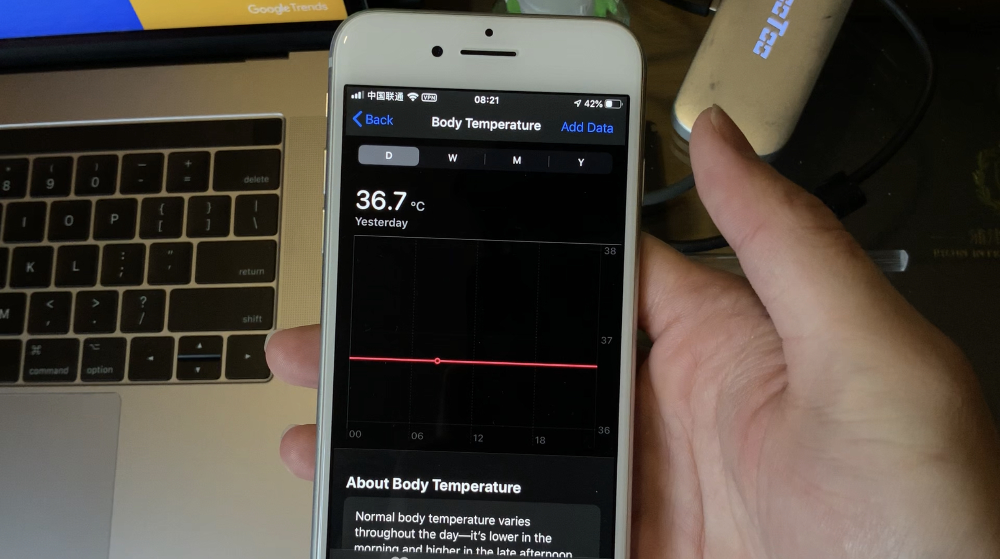
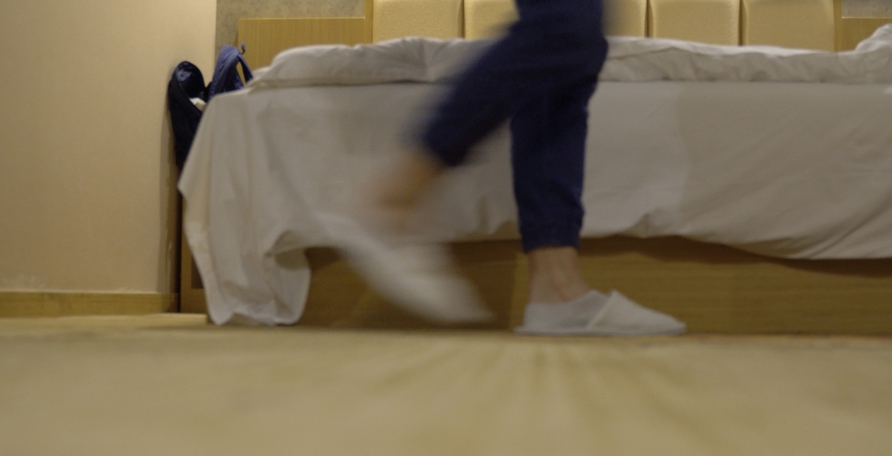
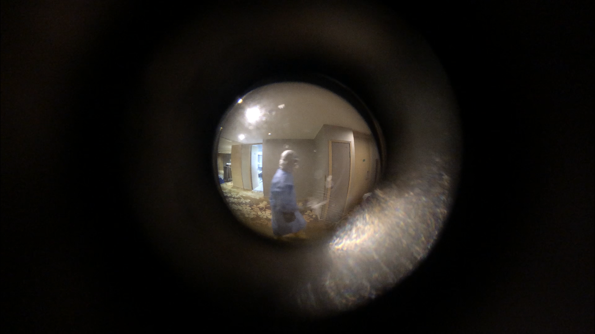
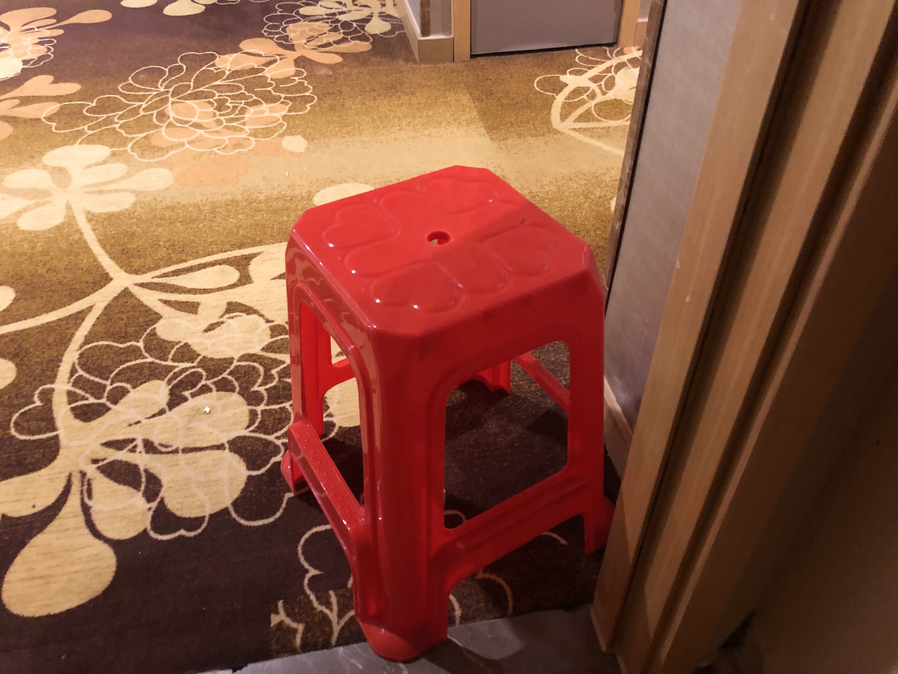
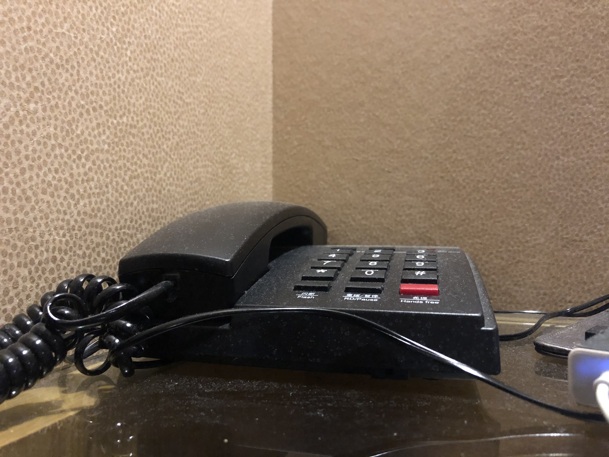
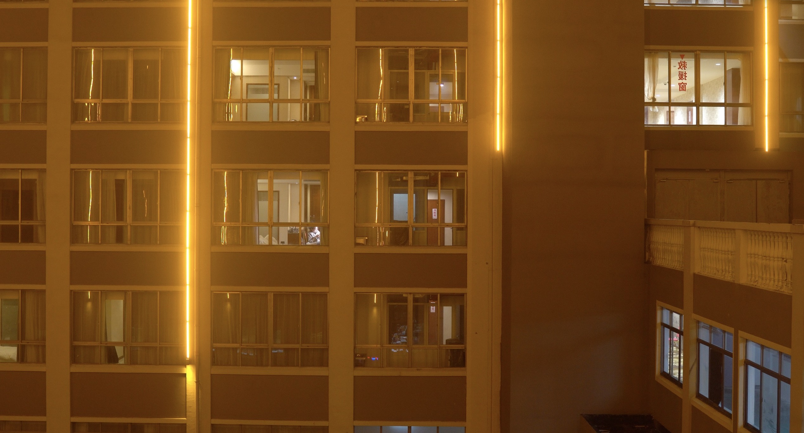

| Visual |
Concept |
Production |
 |
- The tyranny of measurement.
- Having a slightly higher temperature (37.0ºC/98.6ºF) means having to spend another 10 minutes taking another one. Having a fever means not only a possibility of infection, but also the further upending of everyday life: transported to the hospital, getting tested, etc.
- Thus the temperature is both an abstraction of the corporeal (body → data), and the very realization of it. It is also a source of anxiety.
|
- After taking the temperature, film the thermometer while I am holding it, make the reading visible, as if I am reading the temperature.
- The background should have sufficient contrast with the temperature (which is white).
- Can use camera on iPhone.
|
|  |
- The continuation of abstracting body into data.
- It is a document of life during isolation. The act of logging the temperature is the act of witnessing.
|
- Film the screen of my phone as I am entering the data as it appeared in 1.
- Only the upper 3/4 of the screen should be in the camera’s FOV. Doing so centers the actual UI.
- Can use camera on iPad or my camera. There should be sufficient lighting (e.g. daylight)
|
|  |
- Pacing back and forth is something I find myself doing a lot more while in isolation.
- It represents the restriction of mobility, the enclosing of space. It also suggests monotony , boredom, (and perhaps a bit of irritation).
|
- Place the camera on the floor
- Switch to a wide-angle lens so as to yield enough screen space
- The background should be relatively clean.
|
 |
- The constant anxiety of possibility of infection finds a (false) outlet through excessive absorption of information from the internet.
- Because of this anxiety and that I don’t have a fever, I constantly worry that I am an asymptomatic carrier of COVID-19. The fact that I did not get tested while entering Shanghai (despite what the city claimed) further aggravates this anxiety by increasing the uncertainty.
- As such, I find myself Googling more than one times the symptoms of COVID-19, as well as information about asymptomatic carriers.
|
- With my camera, film my laptop screen as I am typing search queries (e.g. “covid 19 without a fever”) into the Google search box.
- Should only include the upper left corner of the screen (where the UI is) so as to make sure text is legible.
- Camera axis should be perpendicular to the screen plane.
|
|  |
- While in isolation, the peephole on the door becomes a source of intrigue. It is where I get to see other people up close — even if they (healthcare workers) are all fully cladded in PPEs. It is where I get to see meals being placed, packages being delivered, and the hallway being cleaned. Signs of life.
- Perhaps, it is also a form of surveillance — one that I have control over.
|
- With my phone or my camera, push the lens directly agains the door so that the peephole is in the center of the screen. Keep stationery and film for at least a few minutes.
- Should film when meals are placed, or whenever I hear footsteps outside.
|
|  |
- That food is a great source of joy notwithstanding, for the most part, this is the only possible physical interaction with the outside world.
- It is also repeated three times a day, and therefore monotonous.
- It is also a representation of a deliberate avoidance of interpersonal interaction — the new norm.
|
- Film myself opening the door and taking the food.
|
|  |
- Despite that Shanghai promised to test everyone entering the city, I did not get testing landing in PVG while the airport got entirely overwhelmed by people returning from overseas — after I spent a good day and a half flying, in enclosed containers and close-proximity to a lot of people.
- This is yet another source of anxiety, both for me and for my family. It has an additional layer of my frustration with the bureaucracy and the general unresponsiveness of the city’s many departments.
|
- Similar to 4, with the exception that this should be stationary for a longer time, as I have to record my phone call with the CDC.
- Alternatively, this can be made in the style of how news programs normally depict phone interviews: place the camera on the table and filming no particular subject.
|
|  |
- Besides counting days, looking out of the window bears my longing for the end of the mandatory isolation. It is a source of hope
|
- Filming through the window, preferably at the sky during a sunny day.
|